约 3334 个字 7 行代码 14 张图片 预计阅读时间 17 分钟
Chap 12 | Concurrency Control
章节启示录
摆烂了……
1.Lock-Based Protocols¶
锁是一种控制对数据项的并发访问的机制
-
数据项可以在两种模式下锁定：
- 独占（X）模式。数据项既可以读取，也可以写。 使用 lock-X 指令请求 X-lock。
- 共享（S）模式。只能读取数据项。S-lock 是
使用 lock-S 指令请求。 向并发控制管理器发出锁定请求。只有在请求获得批准后，交易才能继续进行。
-
要写一个数据，先申请获得 X 锁；要读一个数据，先申请获得 S 锁。
- 访问结束后释放这个锁。
- 访问数据之前必须获得对应的锁，否则需要等待。
- 相容矩阵：
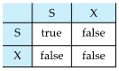
1.1 The Two-Phase Locking Protocol¶
这是一种确保冲突可序列化计划的协议。(每个事务放锁后不加锁)
- 第 1 阶段：生长阶段 (Growing Phase)
- 交易可能获得锁
- 交易可能无法释放锁
- 第 2 阶段：收缩阶段 (Shrinking Phase)
- 交易可能会释放锁
- 交易可能无法获得锁
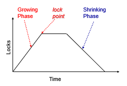
两阶段锁定协议确保了可序列化性。可以证明，交易可以按照其锁定点的顺序（即交易获得其最终锁定的点）进行序列化。
需要基本两阶段封锁，以确保从级联回滚中的可恢复性。
- Strict two-phase locking（严格两阶段封锁）:事务必须持有其所有独占锁，直到它提交/中止。（排他锁最后释放）
确保可恢复性并避免级联回滚
- Rigorous two-phase locking（强两阶段封锁）：事务必须保持所有锁，直到提交/中止。
事务可以按其提交的顺序序列化
1.2 2PL - Proof¶
-
2PL - Proof by Contradiction 引理：如果有 Ti->Tj 的有向边，那 Ti 的 lockpoint 一定小于 Tj。 因为 Ti->Tj 肯定有一个冲突的访问（对同一个数据）那 Tj 在获得锁的时候 Ti 已经放锁了(LP(Ti)< LP(Tj))。
所以，如果不保证可序列化，那么会存在 Ti 到 Tj 的环，根据引理 LP(Ti)< LP(Tj) 且 LP(Tj)< LP(Ti) ，矛盾！LP,i.e,Lock Point，是一个时间
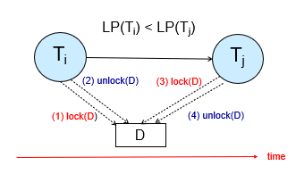
-
2PL - Proof by Induction
只需证明: Lock point 最小的事务，可以无障碍地交换到调度最前。 使用反证法：如果另一个事务 Tj 的操作 OPj 阻止了 Ti 的操作 OPi ,在Tj 和 Ti 之间有一次解锁，所以有一个Lock Point，与 Ti 的 Lock Point 最小矛盾。得证。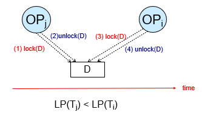
1.3 Lock Conversions¶
带锁转换的两相锁定：
- 第一阶段：
可以获取数据项上的lock-S或lock-X
可以将 lock-S 转换为 lock-X
（lock-upgrade） - 第二阶段：
可以释放锁-S或锁-X
可以将 lock-X 转换为 lock-S
（lock-downgrade）
该协议确保了可序列化性。
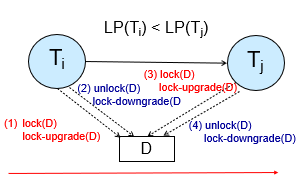
申请哪个锁是由数据库内部管理决定，不是由程序员显示调用。（自动加锁）
2.Implementation of Locking¶
锁管理器可以作为一个单独的进程来实现，事务向该进程发送锁定和解锁请求。
锁管理器通过发送锁授予消息（或在死锁的情况下要求事务回滚的消息）来回复锁请求。
请求事务将等待，直到其请求得到响应。
锁管理器维护一个称为锁表的数据结构，以记录已授予的锁和待处理的请求。
锁定表通常作为内存中的哈希表实现，该哈希表根据被锁定的数据项的名称编制索引。
2.1 Lock Table¶
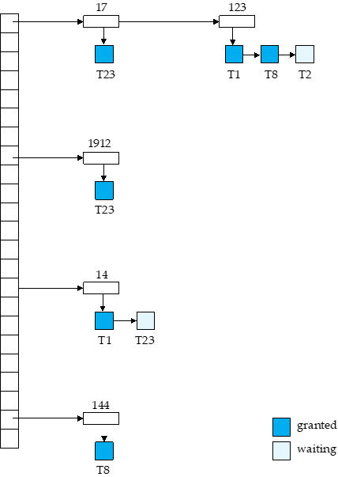
每个记录的 id 可以放进哈希表。 如这里记录 123, T1、T8 获得了 S 锁，但 T2 在等待获得 X 锁。
T1: lock-X(D) 通过 D 的 id 找到哈希表上的项，在对应项上增加。根据是否相容决定是获得锁还是等待。 unlock 类似，先找到对应的数据，拿掉对应的项。同时看后续的项是否可以获得锁。
如果一个事务 commit, 需要放掉所有的锁，我们需要去找。因此我们还需要一个额外的事务的表，标明每个事务所用的锁。
2.2 Deadlock Handling¶
如果存在一组事务，使得集合中的每个事务都在等待集合中的另一个事务，则系统将陷入死锁。 两相锁定不能确保无死锁:
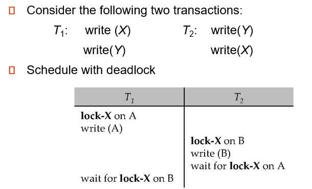
- Deadlock prevention protocols:可确保系统永远不会进入死锁状态。
一些预防策略：- 要求每个事务在开始执行之前锁定其所有数据项（预声明，一次性获得所有的锁（在数据库中不太现实，但在其他并发程序中或许有用武之地））。
- 对所有数据项实施部分排序，并要求事务只能按部分顺序（基于图的协议）指定的顺序锁定数据项。
-
Timeout-Based Schemes:
- 事务仅在指定的时间内等待锁定。之后，等待超时，事务将回滚。因此，死锁是不可能的
- 易于实施;但“饿死”是可能的。也很难确定超时间隔的良好值。
饿死：得不到满足。如果一个锁要写，但其他锁总是要读这个数据，那么就会一直饿着。
2.3 Deadlock Detection¶
死锁可以描述为等待图（wait-for graph）$ G = (V，E)$
\(V\) 是一组顶点（系统中的所有事务）
\(E\) 是一组边;每个元素都是一对有序的 Ti->Tj。
如果 Ti -> Tj 在 E 中，则从 Ti 到 Tj 有一条有向边，这意味着 Ti 正在等待 Tj 释放数据项。
当 Ti 请求当前由 Tj 持有的数据项时，边 Ti Tj 将插入到等待图中。仅当 Tj 不再保存 Ti 所需的数据项时，才会删除此边。
当且仅当等待图具有环时，系统才处于死锁状态。 必须定期调用死锁检测算法来查找周期。
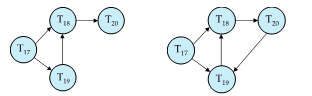
这里的箭头表示在等待锁。如 T17->T18 表示 T17 在等待 T18 的锁。
2.4 Deadlock Recovery¶
检测到死锁时：
某些事务将不得不回滚（成为受害者）以打破僵局。 选择该交易作为受害者，这将产生最低成本。
- Rollback -- 确定回滚事务的程度
- Total rollback：中止事务，然后重新启动它。
- 仅在必要时回滚事务以打破僵局更有效。
如果总是选择相同的交易作为受害者，就会发生饥饿。在成本系数中考虑回滚次数以避免饥饿。
2.5 Graph-Based Protocols¶
假设我们知道数据是按偏序访问的，可以有更高级的协议。
数据按照某种偏序关系访问。
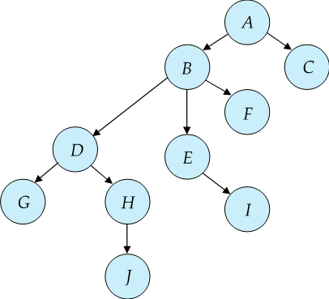
- Tree Protocol:
- 只允许使用X锁。
- Ti 的第一个锁可以位于任何数据项上。随后，只有当 Q 的父级当前被 Ti 锁定时，数据 Q 才能被 Ti 锁定。
- 数据项可以随时解锁。
- 被 Ti 锁定和解锁的数据项随后无法被 Ti 重新锁定(放锁后不能再加锁)
树协议确保了冲突的可序列化性以及免于死锁。
- Advantages：
- 树锁定协议中的解锁可能比两阶段锁定协议中的解锁更早发生。
- 更短的等待时间，并发性增加
- 协议无死锁
- 无需回滚
-
Disadvantages：
-
协议不保证可恢复性或级联自由度
需要引入提交依赖项以确保可恢复性
-
事务可能必须锁定比所需更多的数据项。
- 增加锁定开销和额外的等待时间
- 并发性的潜在降低
-
在两阶段锁定下不可能的时间表在树协议下是可能的，反之亦然。
3.Multiple Granularity(多粒度)¶
允许数据项具有各种大小，并定义数据粒度的层次结构，其中小粒度嵌套在大粒度中。
可以图形化地表示为树（但不要与树锁定协议混淆）。
当事务显式锁定树中的节点时，它会以相同的模式隐式锁定节点的所有后代。
- 锁定粒度（在完成锁定的树中的级别）：
- fine granularity（细粒度）（树中较低）：高并发，高锁定开销
- coarse granularity（粗粒度）（树中较高）：低锁定开销，低并发
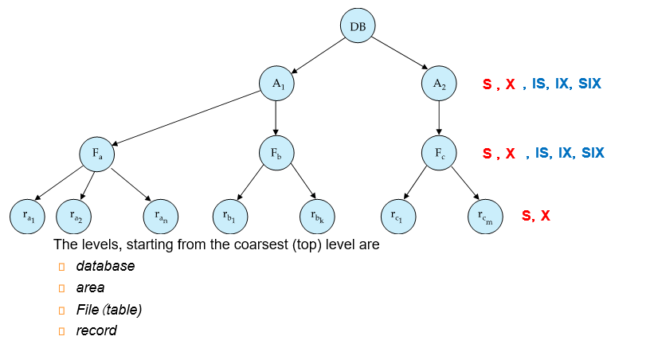
3.1 Intention Lock Modes¶
- 除了 S 和 X 锁定模式之外，还有三种具有多个粒度的其他锁定模式：
- 意向共享 （IS）：表示在树的较低级别显式锁定，但仅使用共享锁。（下面有S）
- 意向独占 （IX）：表示使用独占锁或共享锁在较低级别显式锁定。（下面有X）
- 共享和意向独占 （SIX = S + IX）：该节点根植的子树在共享模式下显式锁定，并且使用独占模式锁在较低级别进行显式锁定。（都可以读了，但是要写还得在具体的记录上加锁）
意向锁允许在 S 或 X 模式下锁定更高级别的节点，而无需检查所有后代节点。这样当我们想向一个表上 S 锁时，发现表上有 IX 锁，这样我们很快就发现了冲突，需要等待。IS 和 IX 是不冲突的。在表上是不冲突的，可能在记录上冲突（即对一个记录又读又写，冲突发生在记录层面而非表）。

- 要符合相容矩阵。从最粗的粒度开始访问。要加锁的时候注意，对父亲的锁有要求。
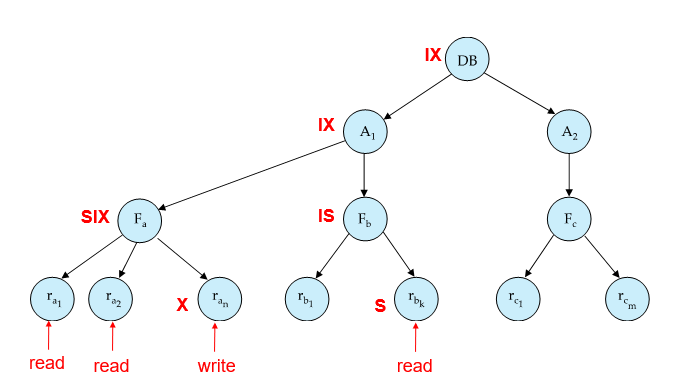
加锁是从上往下，放锁是从下往上。 先对 DB 加 IX, 对 A1 加 IX, 对 Fa 加 SIX, 对某些记录加 X. 其他记录就不用再加 S 锁了(因为表是 SIX).
4.Insert and Delete Operations¶
- 如果使用两阶段锁定：
- 仅当删除元组的事务在要删除的元组上具有 X 模式锁时，才能执行删除操作。
- 在数据库中插入新元组的事务在元组上具有 X 模式锁
- 确保
- 读取/写入与删除冲突
- 插入的元组不能被其他事务访问，直到插入元组的事务提交
-
插入和删除会导致幽灵现象。
- 如果仅使用元组锁，则可能导致不可序列化的计划
例如，扫描事务看不到新帐户，但读取更新事务写入的其他一些元组
4.1 Index Locking Protocol To Prevent Phantoms¶
其实插入/删除操作隐含地修改了信息，只是没有被表示出来。我们可以这个信息显示化，加锁。 如果表上有索引，我们在扫描索引的时候会在叶子修改，我们在这里进行检测。
-
Index locking protocol:：
- 每个关系必须至少有一个索引。
- 事务只有在通过关系上的一个或多个索引找到元组后才能访问元组
-
执行查找的事务 Ti 必须在 S 模式下锁定它访问的所有索引叶节点
即使叶节点不包含任何满足索引查找的元组（例如，对于范围查询，叶中没有元组在范围中）
-
在关系 r 中插入、更新或删除元组 ti 的事务 Ti
- 必须将所有索引更新为 R
- 必须在受插入/更新/删除影响的所有索引叶节点上获取独占锁
- 必须遵守两相锁定协议的规则
这样就保证了不会发生幽灵现象
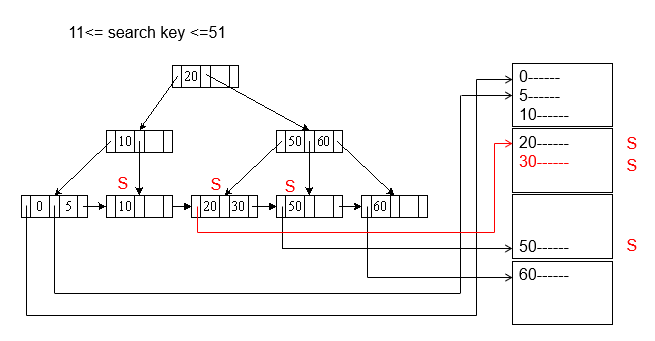
先把要走的路径走一遍，在满足范围的记录上加上锁。
先在叶子页加锁，再在记录上加锁。
如果我们要插入，比如 18. 这时插入到了 10 这页，发现这页被锁住了，无法插入，这样就确保了这个范围内无法被插入，不会有幽灵问题。
4.2 Next-Key Locking To Prevent Phantoms¶
Index-locking protocol防止幽灵现象需要锁定整个叶子。如果插入很多，可能会导致并发性差。
-
Next-key locking protocol：提供更高的并发性
- 锁定满足索引查找的所有值（匹配查找值，或落在查找范围内，而不是锁叶子了）
- 同时锁定索引中的下一个键值 甚至对于插入/删除
- 锁定模式：S 表示查找，X 表示插入/删除/更新
-
确保范围查询将与插入/删除/更新冲突。无论哪个先发生，只要两者是并发的
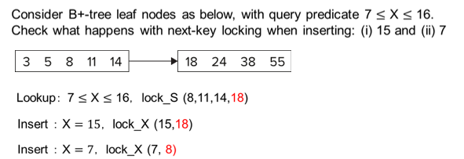
查询 7 到 16, 我们把索引项锁起来，把下一个索引值 18 也锁起来（其实相当于封锁了这个区间）。
插入的时候要申请这个锁和比插入值大的下一个值的锁，这里插入 15 时就要申请 15 和 18 的锁，冲突无法插入。插入 7 同理。
复习时的一些补充
- 在两阶段锁定下不可能的时间表在树协议下是可能的，反之亦然。
-
基本两阶段锁协议不一定能保证recovery可恢复
例子：在第二阶段把 X锁放掉了，其他事务可以访问到这个脏数据，读脏数据就会出现不可恢复。
-
2PL 中 strict 和 rigorous
- There can be conflict serializable schedules that cannot be obtained if two-phase locking is used.
- 两阶段封锁协议的缺点：有些锁不需要持有那么长时间。
如果我们知道数据按照什么顺序访问，不是一个线性关系，是个偏序，没有环 - Concurrency control manager can be designed to prevent starvation
- 基本两阶段锁协议不一定能保证recovery可恢复